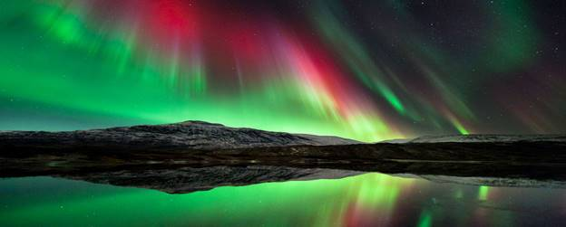
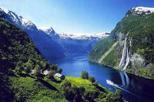

Многим кажется, что Норвегия – это суровая, холодная страна, где и смотреть-то собственно и нечего по сравнению с тропическими странами. На самом деле это не так. Норвегия завораживает и туда хочется ехать снова и снова. Свои впечатления от этой страны вы увидите на этом сайте
Красивая природа, несмотря на мелкий и нудный дождь в Бергене, приветливые люди, чистота и комфорт для проживания, интересные места и история. Норвежские фьорды – это отдельная тема. Это море и скалы, горы и зелень лесов , которые на картинке выглядят совсем не так, как на самом деле. Картинка не пахнет морем и рыбой, солью и цветами, картинку нельзя потрогать руками. Норвежцы очень бережно относятся к своей природе. Даже на лужайках жилых домов можно увидеть лесные грибы.